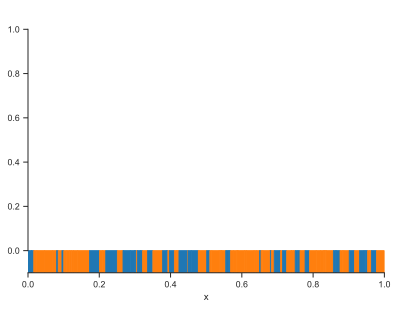
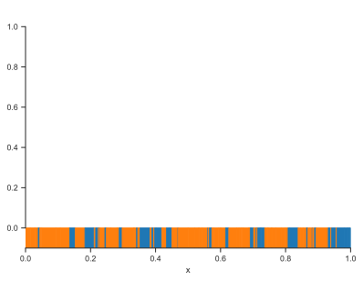
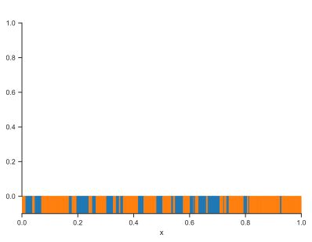
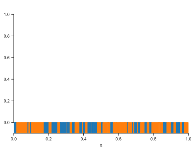
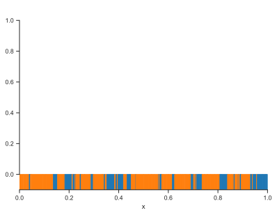
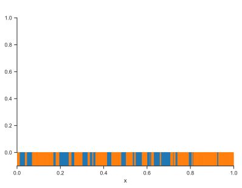

Show code cell source
import numpy as np
import matplotlib.pyplot as plt
%matplotlib inline
import matplotlib_inline
matplotlib_inline.backend_inline.set_matplotlib_formats('svg')
import seaborn as sns
sns.set_context("paper")
sns.set_style("ticks");
Uncertainty Propagation Through a Boundary Value Problem#
Consider the steady-state heat equation on a heterogeneous rod with no heat sources:
for \(x\) between \(0\) and \(1\text{m}\) and boundary values:
We are interested in cases in which we are uncertain about the conductivity, \(c(x)\). Let’s work on modeling this uncertainty in the first place.
Modeling our state of knowledge about the conductivity of the rod#
We need to come up with \(c(x)\). The first thing we need to do is write down everything we know about the rod:
The rod is one meter long. That is, we are ignoring the possibility of an uncertain length.
The rod is from laminations of \(2\) different materials: fiberglass (labeled material 0) and steel (labeled material 1).
We know that the concentration of fiberglass and steel are \(0.3\) and \(0.7\), respectively.
We know that the thermal conductivity of the fiberglass \(0.045\;\text{Wm}^{-1}\text{K}^{-1}\) and of the second \(38\;\text{Wm}^{-1}\text{K}^{-1}\).
The rod is made out of \(D\) segments, each consisting of only one of the two types of material. Even though we do not know the exact number of elements \(D\), we expect them to be around \(100\).
Let’s turn this information into a mathematical model for the conductivity of the rod. First, the number of segments \(D\) must be a discrete random variable with a given expectation, \(\mathbb{E}[D] = 100\). The best choice is a Poisson random variable with the correct rate parameter. It is:
Let’s plot its pmf to build some intuition about it:
import scipy.stats as st
D = st.poisson(100)
fig, ax = plt.subplots()
ax.bar(
np.arange(50, 150),
D.pmf(np.arange(50, 150))
)
ax.set_xlabel('$d$')
ax.set_ylabel('$p(D=d)$')
sns.despine(trim=True);
This looks reasonable. Let’s move to the segment coordinates. The coordinates of these segments are also random. Specifically, the leftmost coordinate is just \(X_0 = 0\); the right-most is \(X_D = 1\). We know this because we know the total length. What are the intermediate \(D-1\) coordinates? Since we are not told anything else, let’s assume that these intermediate coordinates are generated by uniformly sampling in \([0,1]\) and then sorting the numbers. Mathematically, the random vector \(X_{1:D-1}\) is given by:
where
Let’s visualize this as well to develop our intuition.
# Create some random rod segments
fig, ax = plt.subplots()
for i in range(5):
# Get the number of segments
d = D.rvs()
# Get the intermediate coordinates
u = np.random.rand(d-1)
# Create the coordinates of the segment in a sorted manner (including the end points)
x = np.hstack([[0.0], u, [1.0]])
# Plot the segment locations
ax.plot(
x,
np.ones(d+1) * i,
'.',
label=f'Rod {i}'
)
ax.set_xlabel('$x$')
plt.legend(loc='best', frameon=False)
sns.despine(trim=True);
Okay, this looks reasonable as well. Let’s move on to the material types. Each segment will be assigned a random material. Say that the material we assign to segment \(d\) is \(M_d\) taking values in \(\{0, 1\}\). What distribution should we assign to the \(M_d\)’s? We expect the concentration of material \(0\) to be \(0.3\) and of material \(1\) to be \(0.7\). We can interpret this information as the statement that:
and
These equations say that the expected percentage of material \(0\) is \(0.3\) and similarly for material \(1\). What distribution for \(M_d\) is compatible with this information? Let’s assume that all the \(M_d\)’s are independent and identically distributed conditioned on \(D\). Then we can write:
where the internal expectation is conditional on \(D\), i.e., it is with respect to \(p(M_1,\dots,M_D|D)\). So, in this internal expectation, you can treat \(D\) as constant and simplify the equation as:
Now because the \(X_d\)’s are identically distributed conditioned on \(D\), the internal expectation is simply the conditional probability of \(X_d\) taking the value \(0\), i.e., we can rewrite it as:
So, we will satisfy the initial equation if we take \(p(M_d = 0|D) = 0.3\) independently of what \(D\) is. Let’s do exactly that. This means that we can take the \(M_d\) to follow Categorical distributions:
for \(d=1,\dots,D\).
Okay, now we have created random variables that model the number of segments and the material we have on each piece. How do we combine this to make the thermal conductivity a random function? Well, this is now simple. When we want the thermal conductivity at location \(x\), all we have to do is to find the segment \(d\) containing \(x\) and look up the conductivity of material type \(M_d\). If the conductivity of the material \(0\) is \(c_0 = 0.3\) and that of material \(1\) is \(c_1 = 0.8\), then we can write this function as:
Notice that the conductivity is a function of \(D\) and the \(X_d\)’s and the \(M_d\)’s. So, it is a random function.
Getting a bit organized using Python classes#
The model we put together for the rod conductivity needs to be simplified. Let me repeat it here for clarity. It is as follows. The number of segments is:
The \(D+1\) segment coordinates \(X_0,\dots,X_D\) are:
and the intermediate segment coordinates are:
where the segment coordinates are uniformly sampled:
for \(i=1,\dots,D-1\). Finally, the material types are
for \(d=1,\dots,D\), and the random thermal conductivity function:
This is a lot to keep track of. We want to group everything so that we minimize the possibility of bugs. We are going to achieve this using Python classes. If you want to learn what classes are, you may want to pause at this point and watch this tutorial video. Otherwise, skip the definition and go to the end, where we use them.
We will make two classes, a Rod and a RandomRod. Their descriptions are as follows:
Rodrepresents a specific rod, a rod sample if you like. We will be able to initialize it using the segment coordinates, the material ids that go in each segment, and the thermal conductivity that comes with each material. This class will have the following methods:
Rod.get_conductivity(x)will give us the thermal conductivity of the specimen at locationx.Rod.__repr__()will return a text representation of the specimen. This function will be used when you try toprinta rod.Rod.plot()will be a function that visualizes the rod.
RandomRodrepresents a … random rod. It collects all the random variables that affect the characteristics of the rod. Hence, it needs to know the rate of the Poisson distribution for \( D \), the concentration of each material, and, of course, the thermal conductivity associated with each material. This class will have the following methods:
RandomRod.rvs()will be a function that samples a randomRod.
Okay, let’s do it. First, the Rod. You can skip the class definition and go directly to the code block where we use it.
Show code cell source
from matplotlib.patches import Rectangle
class Rod(object):
"""A class representing a rod made out of different materials.
Arguments:
segment_coords -- Coordinates of the segments (both left and right). Total N + 1
if segments are N.
mat_id -- The material ids on each segment. Total N. Values must start
at 0 and go sequential to the maximum number of materials
we have on the rod.
mat_cond -- The conductivity associated with each unique material id.
"""
def __init__(
self,
segment_coords,
mat_id,
mat_cond
):
# Save segments for later
self.segment_coords = np.sort(segment_coords)
# The total number of segments
self.num_segments = self.segment_coords.shape[0] - 1
# Save the material id on each segment for later
self.mat_id = mat_id
# The number of unique materials
self.num_mat = len(np.unique(self.mat_id))
# The conductivity on each segment
self.segment_cond = np.array([mat_cond[m] for m in mat_id])
def _get_conductivity(self, x):
"""Evaluate the conductivity at location x, assuming x is a scalar."""
# Find the segment that contains x
for i in range(self.num_segments):
if self.segment_coords[i] <= x and x <= self.segment_coords[i + 1]:
return self.segment_cond[i]
def get_conductivity(self, x):
"""Evaluate the conductivity at location x.
This works when x is a scalar or a numpy array.
"""
if isinstance(x, float):
return self._get_conductivity(x)
# This checks if x is a numpy array. The function will fail other wise.
assert isinstance(x, np.ndarray)
# And it will only work with 1D arrays
assert x.ndim == 1
# This evaluates the conductivity at all the elements of x and returns
# a numpy array
return np.array([self._get_conductivity(xx) for xx in x])
def __repr__(self):
"""Get a string representation of the rod."""
s = 'SEGID\tLeft\tRight\tMat.\tCond.\n'
s += '-' * 37 + '\n'
for i in range(self.num_segments):
s += f' {i}\t{segment_coords[i]:.2f}'
s += f'\t{segment_coords[i+1]:.2f}'
s += f'\t{material_on_each_segment[i]:d}'
s += f'\t{segment_cond[i]:.2f}\n'
return s
def plot(self, ax=None):
"""Plots the bar. Returns the axes object on which the rod is plot.
Arguments:
ax -- An axes object to plot on. If not given, a new one will be created.
"""
if ax is None:
fig, ax = plt.subplots()
for i in range(self.num_segments):
mat_segment = Rectangle(
(self.segment_coords[i], -0.1),
width=self.segment_coords[i+1] - self.segment_coords[i],
height=0.1,
color=sns.color_palette()[self.mat_id[i]]
)
ax.add_patch(mat_segment)
ax.set_ylim(-0.1, 1.1)
ax.set_xlabel("x")
sns.despine(trim=True)
return ax
Let’s play with this class for a little bit by generating a random material:
help(Rod)
Help on class Rod in module __main__:
class Rod(builtins.object)
| Rod(segment_coords, mat_id, mat_cond)
|
| A class representing a rod made out of different materials.
|
| Arguments:
| segment_coords -- Coordinates of the segments (both left and right). Total N + 1
| if segments are N.
| mat_id -- The material ids on each segment. Total N. Values must start
| at 0 and go sequential to the maximum number of materials
| we have on the rod.
| mat_cond -- The conductivity associated with each unique material id.
|
| Methods defined here:
|
| __init__(self, segment_coords, mat_id, mat_cond)
| Initialize self. See help(type(self)) for accurate signature.
|
| __repr__(self)
| Get a string representation of the rod.
|
| get_conductivity(self, x)
| Evaluate the conductivity at location x.
|
| This works when x is a scalar or a numpy array.
|
| plot(self, ax=None)
| Plots the bar. Returns the axes object on which the rod is plot.
|
| Arguments:
| ax -- An axes object to plot on. If not given, a new one will be created.
|
| ----------------------------------------------------------------------
| Data descriptors defined here:
|
| __dict__
| dictionary for instance variables (if defined)
|
| __weakref__
| list of weak references to the object (if defined)
So this just shows the text that we put inside tripple quotes. Let’s make a rod.
# Let's take two materials with conductivities:
material_cond = [0.3, 0.8]
# The number of materials we have:
num_materials = len(material_cond)
# The number of segments we want to have
num_segments = 100
# The segment coordinates. First segment starts at zero. The last ends at one.
# The intermediate segments have random locations.
segment_coords = np.hstack(
[
[0.0],
np.sort(np.random.rand(num_segments - 1)),
[1.0]
]
)
# Now let's sample a different conductivity for each segment
material_on_each_segment = np.random.randint(num_materials, size=num_segments)
# Conductivity on each segment
segment_cond = np.array(
[
material_cond[m]
for m in material_on_each_segment
]
)
# Now create the rod object:
rod = Rod(
segment_coords,
material_on_each_segment,
material_cond)
You can evaluate the rod object at point to get the conductivity:
rod.get_conductivity(0.8)
0.8
Or you can print it to see how it looks like:
print(rod)
Show code cell output
SEGID Left Right Mat. Cond.
-------------------------------------
0 0.00 0.00 1 0.80
1 0.00 0.00 1 0.80
2 0.00 0.00 0 0.30
3 0.00 0.01 0 0.30
4 0.01 0.01 1 0.80
5 0.01 0.02 0 0.30
6 0.02 0.03 1 0.80
7 0.03 0.05 0 0.30
8 0.05 0.06 0 0.30
9 0.06 0.07 0 0.30
10 0.07 0.08 1 0.80
11 0.08 0.08 1 0.80
12 0.08 0.10 1 0.80
13 0.10 0.10 1 0.80
14 0.10 0.10 0 0.30
15 0.10 0.10 0 0.30
16 0.10 0.13 0 0.30
17 0.13 0.13 1 0.80
18 0.13 0.13 0 0.30
19 0.13 0.15 0 0.30
20 0.15 0.16 0 0.30
21 0.16 0.16 1 0.80
22 0.16 0.17 0 0.30
23 0.17 0.22 0 0.30
24 0.22 0.22 1 0.80
25 0.22 0.23 0 0.30
26 0.23 0.24 0 0.30
27 0.24 0.24 1 0.80
28 0.24 0.24 1 0.80
29 0.24 0.26 0 0.30
30 0.26 0.27 1 0.80
31 0.27 0.27 1 0.80
32 0.27 0.27 0 0.30
33 0.27 0.30 1 0.80
34 0.30 0.31 0 0.30
35 0.31 0.32 0 0.30
36 0.32 0.32 0 0.30
37 0.32 0.33 1 0.80
38 0.33 0.33 0 0.30
39 0.33 0.36 0 0.30
40 0.36 0.37 0 0.30
41 0.37 0.37 0 0.30
42 0.37 0.38 1 0.80
43 0.38 0.39 1 0.80
44 0.39 0.40 1 0.80
45 0.40 0.41 0 0.30
46 0.41 0.43 0 0.30
47 0.43 0.44 1 0.80
48 0.44 0.44 0 0.30
49 0.44 0.46 1 0.80
50 0.46 0.46 0 0.30
51 0.46 0.48 0 0.30
52 0.48 0.48 1 0.80
53 0.48 0.49 0 0.30
54 0.49 0.49 0 0.30
55 0.49 0.50 0 0.30
56 0.50 0.53 0 0.30
57 0.53 0.54 1 0.80
58 0.54 0.54 0 0.30
59 0.54 0.55 0 0.30
60 0.55 0.55 0 0.30
61 0.55 0.56 1 0.80
62 0.56 0.56 0 0.30
63 0.56 0.57 1 0.80
64 0.57 0.57 0 0.30
65 0.57 0.58 0 0.30
66 0.58 0.59 1 0.80
67 0.59 0.62 1 0.80
68 0.62 0.62 1 0.80
69 0.62 0.64 0 0.30
70 0.64 0.64 0 0.30
71 0.64 0.65 0 0.30
72 0.65 0.66 1 0.80
73 0.66 0.71 1 0.80
74 0.71 0.73 1 0.80
75 0.73 0.74 1 0.80
76 0.74 0.75 0 0.30
77 0.75 0.76 0 0.30
78 0.76 0.76 0 0.30
79 0.76 0.76 0 0.30
80 0.76 0.77 0 0.30
81 0.77 0.79 0 0.30
82 0.79 0.79 0 0.30
83 0.79 0.79 0 0.30
84 0.79 0.81 1 0.80
85 0.81 0.83 1 0.80
86 0.83 0.83 0 0.30
87 0.83 0.84 0 0.30
88 0.84 0.86 1 0.80
89 0.86 0.88 0 0.30
90 0.88 0.88 1 0.80
91 0.88 0.88 1 0.80
92 0.88 0.91 0 0.30
93 0.91 0.91 1 0.80
94 0.91 0.91 0 0.30
95 0.91 0.92 0 0.30
96 0.92 0.93 1 0.80
97 0.93 0.96 1 0.80
98 0.96 0.97 1 0.80
99 0.97 1.00 0 0.30
Or you can plot it:
fig, ax = plt.subplots()
rod.plot(ax=ax);
Now, let’s make the RandomRod class:
Show code cell source
class RandomRod(object):
"""A class modeling a random rod.
Arguments:
av_num_segments -- The ``rate`` of the Poisson distribution giving
the number of segments.
mat_probs -- The probabilities of the categorical specifying
each material goes on each segment.
mat_cond -- The conductivity associaed with each unique material id.
"""
def __init__(self, av_num_segments, mat_probs, mat_cond):
# Save some info internally for later usage
self.av_num_segments = av_num_segments
self.mat_probs = mat_probs
self.mat_cond = mat_cond
# Make the Poisson variable corresponding to the number of segments
self.D = st.poisson(av_num_segments)
# Make the Uniform giving the location of the segment coordinates
self.U = st.uniform()
# Make the Categorical random variable that allows us to pick the material
# id on each segment
self.M = st.rv_discrete(
name='M',
values=(np.arange(len(mat_probs)), mat_probs)
)
def _rvs(self):
"""Generate a single random rod."""
# Draw the number of segments
d = self.D.rvs()
# Draw the coordinates
segment_coords = np.hstack(
[
[0.0],
np.sort(self.U.rvs(size=d - 1)),
[1.0]
]
)
# Draw the material type on each segment
mat_ids = self.M.rvs(size=d)
# Generate the rod
return Rod(
segment_coords,
mat_ids,
self.mat_cond
)
def rvs(self, size=1):
"""Generate many random rods."""
if size == 1:
return self._rvs()
return [
self._rvs()
for _ in range(size)
]
Let’s initialize it:
# Create the random rod object
R = RandomRod(
100, # The number of segments
[0.3, 0.7], # The concentration of each material
[0.045, 38.0] # The thermal conductivity of each material
)
# Let's sample a few of them and plot them
for n in range(5):
fig, ax = plt.subplots()
R.rvs().plot(ax=ax)
sns.despine(trim=True);
Show code cell output
 
Now that we can generate random rods let’s write a solver for the steady-state heat equation. The numerical solver will also be a class that takes a given rod and solves the problem.
Fipy is used to solve the boundary value problem using a finite volume scheme You may have to install it if you don’t have it using:
# RUN THIS BLOCK IF YOU HAVEN'T INSTALLED fipy yet
!pip3 install fipy
DEPRECATION: Loading egg at /opt/homebrew/lib/python3.11/site-packages/ipython_tikzmagic-0.1.1-py3.11.egg is deprecated. pip 23.3 will enforce this behaviour change. A possible replacement is to use pip for package installation..
Collecting fipy
Obtaining dependency information for fipy from https://files.pythonhosted.org/packages/3c/90/35015c5e45573144c8c05fc4ce559316205b128eb32fa8126f16f6deb6ea/FiPy-3.4.4-py3-none-any.whl.metadata
Downloading FiPy-3.4.4-py3-none-any.whl.metadata (1.8 kB)
Requirement already satisfied: numpy in /opt/homebrew/lib/python3.11/site-packages (from fipy) (1.24.3)
Requirement already satisfied: scipy in /opt/homebrew/lib/python3.11/site-packages (from fipy) (1.10.1)
Requirement already satisfied: matplotlib in /opt/homebrew/lib/python3.11/site-packages (from fipy) (3.7.1)
Collecting future (from fipy)
Downloading future-0.18.3.tar.gz (840 kB)
━━━━━━━━━━━━━━━━━━━━━━━━━━━━━━━━━━━━━━━ 840.9/840.9 kB 1.0 MB/s eta 0:00:00a 0:00:01
?25h Preparing metadata (setup.py) ... ?25ldone
?25hRequirement already satisfied: contourpy>=1.0.1 in /opt/homebrew/lib/python3.11/site-packages (from matplotlib->fipy) (1.0.7)
Requirement already satisfied: cycler>=0.10 in /opt/homebrew/lib/python3.11/site-packages (from matplotlib->fipy) (0.11.0)
Requirement already satisfied: fonttools>=4.22.0 in /opt/homebrew/lib/python3.11/site-packages (from matplotlib->fipy) (4.39.4)
Requirement already satisfied: kiwisolver>=1.0.1 in /opt/homebrew/lib/python3.11/site-packages (from matplotlib->fipy) (1.4.4)
Requirement already satisfied: packaging>=20.0 in /opt/homebrew/lib/python3.11/site-packages (from matplotlib->fipy) (23.1)
Requirement already satisfied: pillow>=6.2.0 in /opt/homebrew/lib/python3.11/site-packages (from matplotlib->fipy) (9.5.0)
Requirement already satisfied: pyparsing>=2.3.1 in /opt/homebrew/lib/python3.11/site-packages (from matplotlib->fipy) (3.0.9)
Requirement already satisfied: python-dateutil>=2.7 in /opt/homebrew/lib/python3.11/site-packages (from matplotlib->fipy) (2.8.2)
Requirement already satisfied: six>=1.5 in /opt/homebrew/lib/python3.11/site-packages (from python-dateutil>=2.7->matplotlib->fipy) (1.16.0)
Downloading FiPy-3.4.4-py3-none-any.whl (443 kB)
━━━━━━━━━━━━━━━━━━━━━━━━━━━━━━━━━━━━━━━━ 443.6/443.6 kB 1.4 MB/s eta 0:00:0000:0100:01
?25hBuilding wheels for collected packages: future
Building wheel for future (setup.py) ... ?25ldone
?25h Created wheel for future: filename=future-0.18.3-py3-none-any.whl size=492022 sha256=ab00cb2c2686e1ed87c348ca138447f55faa536b67f27727a970a5b2d5210282
Stored in directory: /Users/ibilion/Library/Caches/pip/wheels/da/19/ca/9d8c44cd311a955509d7e13da3f0bea42400c469ef825b580b
Successfully built future
Installing collected packages: future, fipy
Successfully installed fipy-3.4.4 future-0.18.3
Here is our solver using Fipy:
Show code cell source
import fipy
class SteadyStateHeat1DSolver(object):
"""Solves the 1D steady state heat equation with dirichlet boundary conditions.
It uses the stochastic model we developed above to define the random conductivity.
Arguments:
nx -- Number of grid points
value_left -- The value at the left side of the boundary.
value_right -- The value at the right side of the boundary.
"""
def __init__(
self,
nx=500,
value_left=400.0,
value_right=4.0
):
self.nx = nx
self.dx = 1. / nx
# A computational mesh with nx elements
self.mesh = fipy.Grid1D(
nx=self.nx,
dx=self.dx
)
# A variable that represents that temperature on the mesh
self.phi = fipy.CellVariable(
name='$T(x)$',
mesh=self.mesh,
value=0.
)
# A variable that represents the thermal conductivity
self.C = fipy.FaceVariable(
name='$C(x)$',
mesh=self.mesh, value=1.
)
# The constrain on the left boundary
self.phi.constrain(value_left, self.mesh.facesLeft)
# The constrain on the right boundary
self.phi.constrain(value_right, self.mesh.facesRight)
# The The diffusion term
self.eq = fipy.DiffusionTerm(coeff=self.C)
def __call__(self, rod):
"""
Evaluates the code at a specific xi.
"""
# Find the values of the mesh points
x = self.mesh.faceCenters.value.flatten()
# Evaluate the conductivity on these points using the rod model
cond_val = rod.get_conductivity(x)
# Update conductivity values in the equation
self.C.setValue(cond_val)
# Solve the equation
self.eq.solve(var=self.phi)
# Return the solution
return x, self.phi.faceValue()
Let’s draw some random rods and plot the temperature profile for each one of them
Show code cell source
solver = SteadyStateHeat1DSolver(nx=500)
for i in range(2):
fig, ax = plt.subplots()
rod = R.rvs()
x, y = solver(rod)
# plot the rod
rod.plot(ax=ax)
# Get rid of the y ticks for the rod
ax.set_yticks([])
# Get another axis to plot the temperature
ax1 = ax.twinx()
# Make sure the ticks for this axis are on the left
ax1.yaxis.tick_left()
# Same for the label
ax1.yaxis.set_label_position("left")
# Plot the temperature
ax1.plot(x, y, 'r', lw=1)
ax.set_xlabel('$x$ (m)')
ax1.set_ylabel(r'$T(x)\;(^\circ C)$')
sns.despine(trim=True);
Now let’s draw multiple samples and plot them on the same figure:
fig, ax = plt.subplots()
for i in range(20):
rod = R.rvs()
x, y = solver(rod)
ax.plot(x, y, 'r', lw=0.5)
ax.set_xlabel('$x$ (m)')
ax.set_ylabel(r'$T(x)\;(^\circ C)$')
sns.despine(trim=True);
Our classes are working as expected. Now let’s use them to do Monte Carlo.
Uncertainty propagation through the boundary value problem#
We start by generating the data to reuse them later to analyze various quantities of interest. Writing the data to a file we can reuse later without rerunning the notebook is also a good idea. This is especially useful if we are using computationally expensive simulators.
# Number of samples to take
N = 1000
# A place to store the results of all simulations
data = np.ndarray((N, solver.nx + 1))
# Loop over samples
for n in range(N):
# Draw a random rod
rod = R.rvs()
# Evaluate the solver at this rod
y = solver(rod)[1]
# Store the data for later use
data[n, :] = y
# Okay, we have the data. Let's write them to a file in the simplest possible way
# (using a text format). IF YOU ARE ON GOOGLE COLAB THE FILE IS
data_filename = f'steady_state_heat_N={N}.txt'
# This saves the data:
np.savetxt(data_filename, data)
Here is how you can reload the data (this doesn’t require running the code above if you have already done it).
# The file to read (MAKE SURE YOU CHANGE THIS IF YOU WNAT TO READ ANOTHER FILE)
# IF YOU ARE ON GOOGLE COLAB THE FILE
input_filename = 'steady_state_heat_N=1000.txt'
# This is just a check that the file exists
import os
if not os.path.exists(input_filename):
raise RuntimeError(
'File "{input_filename}" does not exist.'
+ 'Make sure you run code above with the appropriate parameters'
)
# If you reach this point, the file exists. Load it:
data = np.loadtxt(input_filename)
print('Loaded data shape: ', data.shape)
# Make sure N reflects the correct data set
N = data.shape[0]
Loaded data shape: (1000, 501)
And now, we can use the data to estimate statistics using Monte Carlo.
Let’s start with the expectation of \(T(x)\) at a single point, say \(x=0.5\).
That is, we want to estimate \(\mathbb{E}[T(x=0.5)]\) where the expectation is over the random rods.
Here is how we can do it:
# Extract only the relevant data
T_middle_data = data[:, int(solver.nx / 2)]
# Evaluate the sample average
T_middle_running = np.cumsum(T_middle_data) / np.arange(1, N + 1)
# Evaluate the sample average for the squared of T_middle
T_middle2_running = np.cumsum(T_middle_data ** 2) / np.arange(1, N + 1)
# Evaluate the running average of the variance
sigma2_running = T_middle2_running - T_middle_running ** 2
# Alright, now we have quantified our uncertainty about I for every N
# from a single MC run. Let's plot a (about) 95% predictive interval
# Running lower bound for the predictive interval
T_middle_lower_running = (
T_middle_running
- 2.0 * np.sqrt(sigma2_running / np.arange(1, N + 1))
)
# Running upper bound for the predictive interval
T_middle_upper_running = (
T_middle_running
+ 2.0 * np.sqrt(sigma2_running / np.arange(1, N + 1))
)
# A common plot for all estimates
fig, ax = plt.subplots()
# Shaded area for the interval
ax.fill_between(
np.arange(1, N + 1),
T_middle_lower_running,
T_middle_upper_running,
alpha=0.25
)
# Here is the MC estimate:
ax.plot(np.arange(1, N+1), T_middle_running, 'b', lw=2)
# The true value
ax.plot(np.arange(1, N+1), [(4.0 + 400.0) / 2] * N, color='r')
# and the labels
ax.set_xlabel('$N$')
ax.set_ylabel(r'$\mathbb{E}[T(x=0.5)]$')
sns.despine(trim=True);
How many samples must you take for this to be sufficiently converged? Remember, that in real life you cannot see the red line. Suppose that we want to ensure an accurate of some small positive \(\epsilon\). We can say that we want an \(N\) such that the 95% prediction interval is less wide than \(\epsilon\). If we knew the variance \(\sigma^2\) of the random variable, then the interval width (according to CLT) would be approximately:
So, we want an \(N\) that satisfies:
Of course, we do not know \(\sigma^2\). So, the next best thing we can do is to estimate it as well and then pick \(N\) such that:
Here is an attempt:
bar_sigma = np.sqrt(sigma2_running[-1]) bar_sigma
epsilon = 1
bar_sigma2 = sigma2_running[-1]
N = int(16 * bar_sigma2 / epsilon**2 + 1)
print("N = ", N)
N = 30503
That’s a big number. And it will be bigger if you choose a smaller \(\epsilon\). There are ways to deal with this issue. The most common way to deal with this is to replace the computationally expensive numerical solver with an inexpensive surrogate model. You build this model using a finite number of input-output pairs from the numerical solver. Then you use this surrogate model to predict the output for any input. There many possibilities for the surrogate model: polynomial regression, neural networks, Gaussian processes, etc. You will be equipped with the knowledge to build these surrogate models by the time you finish this course.
Let us finish by finding the median and a 95% predictive interval for all spatial points:
mu = np.median(data, axis=0)
mu_025 = np.percentile(data, 2.5, axis=0)
mu_975 = np.percentile(data, 97.5, axis=0)
fig, ax = plt.subplots()
ax.fill_between(x, mu_025, mu_975, color=sns.color_palette()[0], alpha=0.25)
# Let's take a couple of samples and see if they fall inside:
for _ in range(5):
rod = R.rvs()
y = solver(rod)[1]
ax.plot(x, y, 'r', lw=0.5)
ax.plot(x, mu)
ax.set_xlabel('$x$')
ax.set_ylabel('$T(x)$')
sns.despine(trim=True);
Questions#
Use the data you have collected in
datato estimate the probability that \(T(x=0.5)\) is greater than \(0.6\).